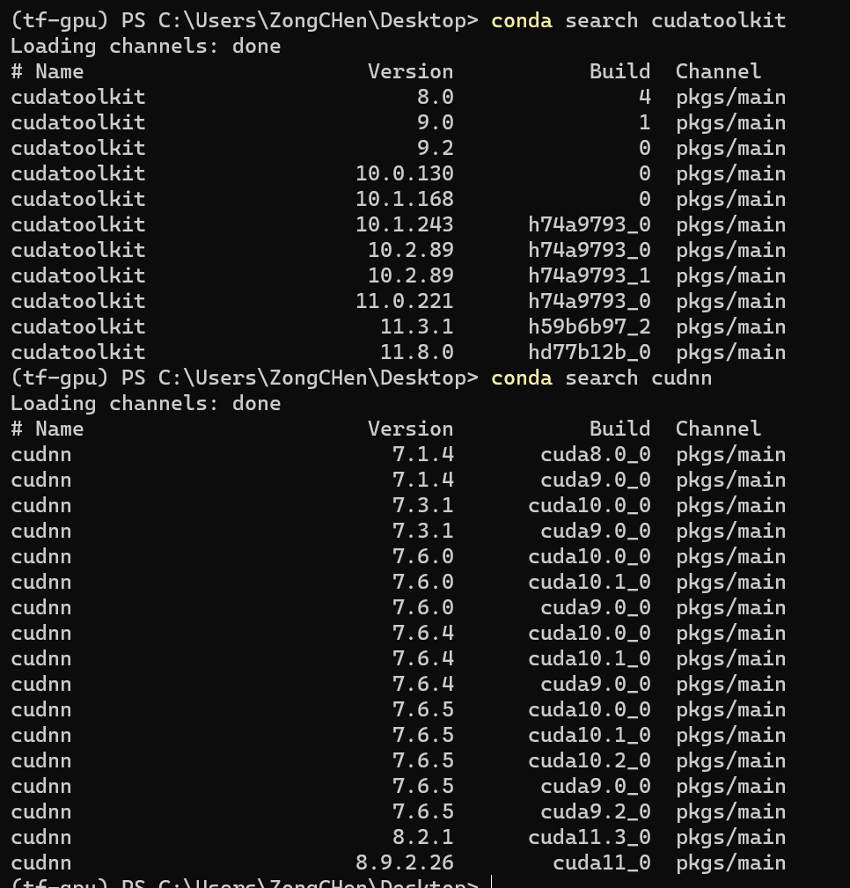
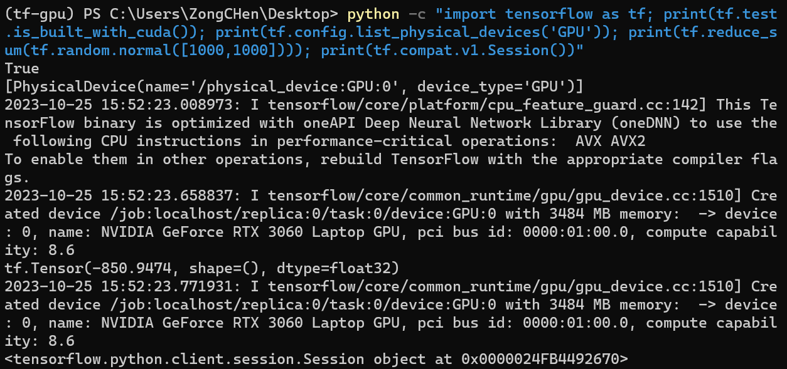

准备工作- TensorFlow 和其他工具软件包
TensorFlow
TensorFlow是一个开源软件库，用于各种感知和语言理解任务的机器学习。目前被50个团队用于研究和生产许多Google商业产品，如语音识别、Gmail、Google 相册和搜索，其中许多产品曾使用过其前任软件DistBelief。 TensorFlow最初由谷歌大脑团队开发，用于Google的研究和生产，于2015年11月9日在Apache 2.0开源许可证下发布。
Official Website | GitHub
Setup
跟随以下步骤，在2023年10月25日，Windows11 系统下安装TensorFlow 2.6.0版本。
我的电脑配置:
CPU：AMD Ryzen 9 6900HX @3.3GHz
GPU：NVIDIA GeForce RTX 3060 Laptop GPU
RAM：32GB Samsung DDR5 BDie 5200Mit/s
SSD：1TB Micron 3400 PCIe4.0 NVMe SSD
WLan：Intel AX210 802.11ax WiFi 6E
Lan: RealTek Semiconductor RTL8125 Gaming 2.5GbE Family Ethernet Controller
需要提前下载的文件：
Anaconda
CUDA Toolkit
cuDNN
说明
很多教程都喜欢在实体环境下安装，这样是不好的，官方的文档也不推荐这样做。🤣
所以我们使用 Anaconda 创建一个虚拟环境，然后在虚拟环境中安装 TensorFlow。“Wink😉”
CUDA Toolkit
在官网下载最新版本的 CUDA Toolkit(cuda_12.3.0_545.84_windows)。
不必担心兼容性问题，CUDA 是向下兼容的，即新版本的 CUDA 可以运行旧版本的 cuDNN。
安装 CUDA Toolkit，选择安装路径，点击“Install”按钮。
等待安装完成，点击“Finish”按钮。
cuDNN
把下载好的 cuDNN(cudnn-windows-x86_64-8.9.4.25_cuda12-archive) 压缩包解压到 CUDA Toolkit 的安装路径下。
Python Environment: Anaconda
打开 Anaconda 官网，下载最新版本的 Anaconda(Anaconda3-2023.09-0-Windows-x86_64)。
安装 Anaconda，选择安装路径，勾选“Add Anaconda to my PATH environment variable”，点击“Install”按钮。
等待安装完成，点击“Next”按钮。
Create a new environment
打开 Anaconda Prompt，创建一个新的环境。
1 | conda create -n tf-gpu python=3.9 |
激活新环境。
1 | conda env list # 查看所有环境 |
Install cuda toolkit and cudnn
先寻找
cuda toolkit和cudnn
1 | conda search cudatoolkit |
这里我们选择安装 cudatoolkit==11.3.1 和 cudnn==8.2.1
注意版本号
注意：cudatoolkit 和 cudnn 的版本要对应，且与 tensorflow-gpu 的版本对应，否则会报错。
参考：Tested build configurations
并不需要完全一致，但最好是一致的。参考下图，
cudatoolkit==11.3.1和cudnn==8.2.1，cudnn==8.2.1其实对应的是cudatoolkit==11.3.0，但是也可以运行。

安装
cudatoolkit和cudnn
1 | conda install cudatoolkit==11.3.1 |
最好按照上面的顺序安装。（因为我觉得 cudnn 依赖于 cudatoolkit）🫠
Install tensorflow-gpu
安装
tensorflow-gpu
1 | pip install tensorflow-gpu==2.6.0 |
2. 测试
不用测试了，一定会报错的。😅
因为依赖的 numpy 与 protobuf 的版本不对应。😡
1 | pip install numpy==1.19.5 |
测试
Test code
1 | python -c "import tensorflow as tf; print(tf.test.is_built_with_cuda()); print(tf.config.list_physical_devices('GPU')); print(tf.reduce_sum(tf.random.normal([1000,1000]))); print(tf.compat.v1.Session())" |

结果提示：True，说明安装成功。❤️
并且识别到了 Nvdia 独立显卡。🎉
此时我们的软件包如下：
篇幅很长，如有需要点击展开/关闭
1 | pip list |
版本详细信息
Package Version
absl-py 0.15.0
astunparse 1.6.3
cachetools 5.3.2
certifi 2023.7.22
charset-normalizer 3.3.1
clang 5.0
flatbuffers 1.12
gast 0.4.0
google-auth 2.23.3
google-auth-oauthlib 1.1.0
google-pasta 0.2.0
grpcio 1.59.0
h5py 3.1.0
idna 3.4
importlib-metadata 6.8.0
keras 2.14.0
Keras-Preprocessing 1.1.2
Markdown 3.5
MarkupSafe 2.1.3
numpy 1.19.5
oauthlib 3.2.2
opt-einsum 3.3.0
pip 23.3
protobuf 3.20.0
pyasn1 0.5.0
pyasn1-modules 0.3.0
requests 2.31.0
requests-oauthlib 1.3.1
rsa 4.9
setuptools 68.0.0
six 1.15.0
tensorboard 2.15.0
tensorboard-data-server 0.7.2
tensorflow-estimator 2.14.0
tensorflow-gpu 2.6.0
termcolor 1.1.0
typing-extensions 3.7.4.3
urllib3 2.0.7
Werkzeug 3.0.1
wheel 0.41.2
wrapt 1.12.1
zipp 3.17.0
10月25日更新
后来，我需要安装 pytroch，因为是 conda 环境，所以直接conda安装就好了。
1 | conda install pytorch torchvision torchaudio pytorch-cuda=12.1 -c pytorch -c nvidia |
但是会有兼容性问题，所以需要安装 numpy==1.20.0。
1 | pip install numpy==1.20.0 |
之后，测试一下。
1 | python -c "import torch; print(torch.__version__); print(torch.cuda.is_available()); print(torch.backends.cudnn.m.is_available()); print(torch.rand(5, 3))" |
此时的软件包如下：
篇幅很长，如有需要点击展开/关闭
1 | pip list |
版本详细信息
Package Version
absl-py 0.15.0
astunparse 1.6.3
Brotli 1.0.9
cachetools 5.3.2
certifi 2023.7.22
cffi 1.15.1
charset-normalizer 2.0.4
clang 5.0
cryptography 41.0.3
filelock 3.9.0
flatbuffers 1.12
fsspec 2023.4.0
gast 0.4.0
google-auth 2.23.3
google-auth-oauthlib 1.1.0
google-pasta 0.2.0
grpcio 1.59.0
h5py 3.1.0
idna 3.4
importlib-metadata 6.8.0
Jinja2 3.1.2
keras 2.14.0
Keras-Preprocessing 1.1.2
Markdown 3.5
MarkupSafe 2.1.1
mkl-fft 1.3.8
mkl-random 1.2.4
mkl-service 2.4.0
mpmath 1.3.0
networkx 3.0
numpy 1.20.0
oauthlib 3.2.2
opt-einsum 3.3.0
Pillow 10.0.1
pip 23.3
protobuf 3.20.0
pyasn1 0.5.0
pyasn1-modules 0.3.0
pycparser 2.21
pyOpenSSL 23.2.0
PySocks 1.7.1
PyYAML 6.0.1
requests 2.31.0
requests-oauthlib 1.3.1
rsa 4.9
setuptools 68.0.0
six 1.15.0
sympy 1.11.1
tensorboard 2.15.0
tensorboard-data-server 0.7.2
tensorflow-estimator 2.14.0
tensorflow-gpu 2.6.0
termcolor 1.1.0
torch 2.1.0
torchaudio 2.1.0
torchvision 0.16.0
typing-extensions 3.7.4.3
urllib3 1.26.18
Werkzeug 3.0.1
wheel 0.41.2
win-inet-pton 1.1.0
wrapt 1.12.1
zipp 3.17.0
10月28日更新
需要使用到 matplotlib，所以安装一下。
1 | conda install matplotlib==3.3.4 |
这个版本没有出现兼容性问题。
以及 opencv。
1 | conda install opencv==4.6.0 |
如果运行程序提示错误，很可能是 numpy 的版本问题，可以尝试重装 numpy==1.20.0。
1 | pip uninstall numpy |
numpy 这小子真是个麻烦的家伙。😅
随后进行测试。
1 | python -c "import matplotlib; print(matplotlib.__version__); import cv2; print(cv2.__version__)" |
具体功能测试
matplotlib
1 | import matplotlib.pyplot as plt |
opencv
1 | import cv2 |
然后，我们发现 opencv 报错了。
提示 The function is not implemented. Rebuild the library with……
解决方法：
1 | pip install opencv-contrib-python==4.8.1.78 |
此时的软件包如下：
篇幅很长，如有需要点击展开/关闭
1 | pip list |
版本详细信息
Package Version
absl-py 0.15.0
astunparse 1.6.3
Brotli 1.0.9
cachetools 5.3.2
certifi 2023.7.22
cffi 1.15.1
charset-normalizer 2.0.4
clang 5.0
cryptography 41.0.3
cycler 0.11.0
filelock 3.9.0
flatbuffers 1.12
fsspec 2023.4.0
gast 0.4.0
google-auth 2.23.3
google-auth-oauthlib 1.1.0
google-pasta 0.2.0
grpcio 1.59.0
h5py 3.1.0
idna 3.4
importlib-metadata 6.8.0
Jinja2 3.1.2
keras 2.14.0
Keras-Preprocessing 1.1.2
kiwisolver 1.4.4
Markdown 3.5
MarkupSafe 2.1.1
matplotlib 3.3.4
mkl-fft 1.3.8
mkl-random 1.2.4
mkl-service 2.4.0
mpmath 1.3.0
networkx 3.0
numpy 1.20.0
oauthlib 3.2.2
opencv-contrib-python 4.8.1.78
opt-einsum 3.3.0
packaging 23.1
Pillow 10.0.1
pip 23.3
ply 3.11
protobuf 3.20.0
pyasn1 0.5.0
pyasn1-modules 0.3.0
pycparser 2.21
pyOpenSSL 23.2.0
pyparsing 3.0.9
PyQt5 5.15.7
PyQt5-sip 12.11.0
PySocks 1.7.1
python-dateutil 2.8.2
PyYAML 6.0.1
requests 2.31.0
requests-oauthlib 1.3.1
rsa 4.9
setuptools 68.0.0
sip 6.6.2
six 1.15.0
sympy 1.11.1
tensorboard 2.15.0
tensorboard-data-server 0.7.2
tensorflow-estimator 2.14.0
tensorflow-gpu 2.6.0
termcolor 1.1.0
toml 0.10.2
torch 2.1.0
torchaudio 2.1.0
torchvision 0.16.0
tornado 6.3.3
typing-extensions 3.7.4.3
urllib3 1.26.18
Werkzeug 3.0.1
wheel 0.41.2
win-inet-pton 1.1.0
wrapt 1.12.1
zipp 3.17.0
1 | conda list |
版本详细信息
/# packages in environment at C:\Environment\Python\anaconda3\envs\tf-gpu:
/#
/# Name Version Build Channel
absl-py 0.15.0 pypi_0 pypi
astunparse 1.6.3 pypi_0 pypi
blas 1.0 mkl
brotli-python 1.0.9 py39hd77b12b_7
ca-certificates 2023.08.22 haa95532_0
cachetools 5.3.2 pypi_0 pypi
certifi 2023.7.22 py39haa95532_0
cffi 1.15.1 py39h2bbff1b_3
charset-normalizer 3.3.1 pypi_0 pypi
clang 5.0 pypi_0 pypi
cryptography 41.0.3 py39h89fc84f_0
cuda-cccl 12.3.52 0 nvidia
cuda-cudart 12.1.105 0 nvidia
cuda-cudart-dev 12.1.105 0 nvidia
cuda-cupti 12.1.105 0 nvidia
cuda-libraries 12.1.0 0 nvidia
cuda-libraries-dev 12.1.0 0 nvidia
cuda-nvrtc 12.1.105 0 nvidia
cuda-nvrtc-dev 12.1.105 0 nvidia
cuda-nvtx 12.1.105 0 nvidia
cuda-opencl 12.3.52 0 nvidia
cuda-opencl-dev 12.3.52 0 nvidia
cuda-profiler-api 12.3.52 0 nvidia
cuda-runtime 12.1.0 0 nvidia
cudatoolkit 11.3.1 h59b6b97_2
cudnn 8.2.1 cuda11.3_0
cycler 0.11.0 pyhd3eb1b0_0
eigen 3.3.7 h59b6b97_1
ffmpeg 4.2.2 he774522_0
filelock 3.9.0 py39haa95532_0
flatbuffers 1.12 pypi_0 pypi
freetype 2.12.1 ha860e81_0
fsspec 2023.4.0 pypi_0 pypi
gast 0.4.0 pypi_0 pypi
giflib 5.2.1 h8cc25b3_3
glib 2.69.1 h5dc1a3c_2
google-auth 2.23.3 pypi_0 pypi
google-auth-oauthlib 1.1.0 pypi_0 pypi
google-pasta 0.2.0 pypi_0 pypi
grpcio 1.59.0 pypi_0 pypi
gst-plugins-base 1.18.5 h9e645db_0
gstreamer 1.18.5 hd78058f_0
h5py 3.1.0 pypi_0 pypi
hdf5 1.12.1 h51c971a_3
icc_rt 2022.1.0 h6049295_2
icu 58.2 ha925a31_3
idna 3.4 py39haa95532_0
importlib-metadata 6.8.0 pypi_0 pypi
intel-openmp 2023.1.0 h59b6b97_46319
jinja2 3.1.2 py39haa95532_0
jpeg 9e h2bbff1b_1
keras 2.14.0 pypi_0 pypi
keras-preprocessing 1.1.2 pypi_0 pypi
kiwisolver 1.4.4 py39hd77b12b_0
krb5 1.20.1 h5b6d351_0
lerc 3.0 hd77b12b_0
libclang 14.0.6 default_hb5a9fac_1
libclang13 14.0.6 default_h8e68704_1
libcublas 12.1.0.26 0 nvidia
libcublas-dev 12.1.0.26 0 nvidia
libcufft 11.0.2.4 0 nvidia
libcufft-dev 11.0.2.4 0 nvidia
libcurand 10.3.4.52 0 nvidia
libcurand-dev 10.3.4.52 0 nvidia
libcusolver 11.4.4.55 0 nvidia
libcusolver-dev 11.4.4.55 0 nvidia
libcusparse 12.0.2.55 0 nvidia
libcusparse-dev 12.0.2.55 0 nvidia
libdeflate 1.17 h2bbff1b_1
libffi 3.4.4 hd77b12b_0
libiconv 1.16 h2bbff1b_2
libjpeg-turbo 2.0.0 h196d8e1_0
libnpp 12.0.2.50 0 nvidia
libnpp-dev 12.0.2.50 0 nvidia
libnvjitlink 12.1.105 0 nvidia
libnvjitlink-dev 12.1.105 0 nvidia
libnvjpeg 12.1.1.14 0 nvidia
libnvjpeg-dev 12.1.1.14 0 nvidia
libogg 1.3.5 h2bbff1b_1
libpng 1.6.39 h8cc25b3_0
libpq 12.15 h906ac69_1
libprotobuf 3.20.3 h23ce68f_0
libtiff 4.5.1 hd77b12b_0
libuv 1.44.2 h2bbff1b_0
libvorbis 1.3.7 he774522_0
libwebp 1.3.2 hbc33d0d_0
libwebp-base 1.3.2 h2bbff1b_0
libxml2 2.10.4 h0ad7f3c_1
libxslt 1.1.37 h2bbff1b_1
lz4-c 1.9.4 h2bbff1b_0
markdown 3.5 pypi_0 pypi
markupsafe 2.1.3 pypi_0 pypi
matplotlib 3.3.4 py39haa95532_0
matplotlib-base 3.3.4 py39h49ac443_0
mkl 2023.1.0 h6b88ed4_46357
mkl-service 2.4.0 py39h2bbff1b_1
mkl_fft 1.3.8 py39h2bbff1b_0
mkl_random 1.2.4 py39h59b6b97_0
mpmath 1.3.0 py39haa95532_0
networkx 3.0 pypi_0 pypi
numpy 1.20.0 pypi_0 pypi
oauthlib 3.2.2 pypi_0 pypi
opencv 4.6.0 py39ha36de5b_5
opencv-contrib-python 4.8.1.78 pypi_0 pypi
openjpeg 2.4.0 h4fc8c34_0
openssl 3.0.11 h2bbff1b_2
opt-einsum 3.3.0 pypi_0 pypi
packaging 23.1 py39haa95532_0
pcre 8.45 hd77b12b_0
pillow 9.3.0 pypi_0 pypi
pip 23.3 py39haa95532_0
ply 3.11 py39haa95532_0
protobuf 3.20.0 pypi_0 pypi
pyasn1 0.5.0 pypi_0 pypi
pyasn1-modules 0.3.0 pypi_0 pypi
pycparser 2.21 pyhd3eb1b0_0
pyopenssl 23.2.0 py39haa95532_0
pyparsing 3.0.9 py39haa95532_0
pyqt 5.15.7 py39hd77b12b_0
pyqt5-sip 12.11.0 py39hd77b12b_0
pysocks 1.7.1 py39haa95532_0
python 3.9.18 h1aa4202_0
python-dateutil 2.8.2 pyhd3eb1b0_0
pytorch 2.1.0 py3.9_cuda12.1_cudnn8_0 pytorch
pytorch-cuda 12.1 hde6ce7c_5 pytorch
pytorch-mutex 1.0 cuda pytorch
pyyaml 6.0.1 py39h2bbff1b_0
qt-main 5.15.2 h879a1e9_9
qt-webengine 5.15.9 h5bd16bc_7
qtwebkit 5.212 h2bbfb41_5
requests 2.31.0 py39haa95532_0
requests-oauthlib 1.3.1 pypi_0 pypi
rsa 4.9 pypi_0 pypi
setuptools 68.0.0 py39haa95532_0
sip 6.6.2 py39hd77b12b_0
six 1.15.0 pypi_0 pypi
sqlite 3.41.2 h2bbff1b_0
sympy 1.12 pypi_0 pypi
tbb 2021.8.0 h59b6b97_0
tensorboard 2.15.0 pypi_0 pypi
tensorboard-data-server 0.7.2 pypi_0 pypi
tensorflow-estimator 2.14.0 pypi_0 pypi
tensorflow-gpu 2.6.0 pypi_0 pypi
termcolor 1.1.0 pypi_0 pypi
tk 8.6.12 h2bbff1b_0
toml 0.10.2 pyhd3eb1b0_0
torchaudio 2.1.0 pypi_0 pypi
torchvision 0.16.0 pypi_0 pypi
tornado 6.3.3 py39h2bbff1b_0
typing-extensions 3.7.4.3 pypi_0 pypi
typing_extensions 4.7.1 py39haa95532_0
tzdata 2023c h04d1e81_0
urllib3 2.0.7 pypi_0 pypi
vc 14.2 h21ff451_1
vs2015_runtime 14.27.29016 h5e58377_2
werkzeug 3.0.1 pypi_0 pypi
wheel 0.41.2 py39haa95532_0
win_inet_pton 1.1.0 py39haa95532_0
wrapt 1.12.1 pypi_0 pypi
xz 5.4.2 h8cc25b3_0
yaml 0.2.5 he774522_0
zipp 3.17.0 pypi_0 pypi
zlib 1.2.13 h8cc25b3_0
zstd 1.5.5 hd43e919_0
参考
TensorFlow 官方文档
Anaconda Install TensorFlow
Tested build configurations
使用 Gpu
Install TensorFlow with pip
十分钟安装TensorFlow-GPU